算法与数据结构
时间复杂度
-
RAM？
-
算法的正确性：
- 对任何一个输入，算法在有限步完成，且输出结果正确
- 不完美的算法也有用（只要准确率较高）
- 猴子算法：每次随机排序。时间复杂度 ，每次检查是否排好序需要 。最坏时间复杂度无穷
-
$\lim_{n\rightarrow ∞}\frac{f(n)}{g(n)}=c_0>0 \Rightarrow f(n)\in \Theta(g(n)) $，反之则不一定成立
- 例如
-
斯特林近似
- 由此还可以推

-
尾递归
- 每次执行过程中至多只会进行一次递归
- 递归调用返回后原始函数也立刻返回
- 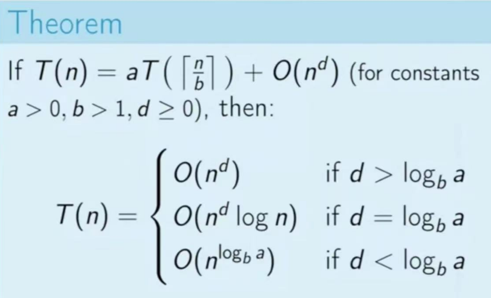 - 哪个大，指数就是谁
-
-
https://www.cnblogs.com/1-2-3/archive/2007/09/10/prove-divide-and-conque.html 关于循环不变式和STOOGE-SORT
-
斐波那契数列时间复杂度（递归的方法） https://zhuanlan.zhihu.com/p/257214075 方法二
- 递归求解斐波那契数列的叶子结点数量其实就是 F(n) 。因为所有叶子结点的返回结果都是 1，而递归求解相当于把所有的1按照不同的顺序加起来。
- 内部结点的数量其实就是 F(n)−1 ，因为每个结点做了一次加法，无论用什么样的顺序将所有的 1 加起来，所需要的加法数量其实都是 F(n)−1 。
- 所以
- 只需求斐波那契的通项公式 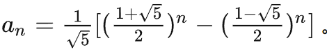 可用特征方程
- 所以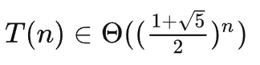，约等于1.618
- （特征方程什么的还没仔细看）
-
BuildMaxHeap的时间复杂度是
-
堆排序执行过程中需要的额外空间是 ；Merge Sort 需要 的额外空间
-
排序算法 稳定性：假定在待排序的记录序列中，存在多个具有相同的关键字的记录，若经过排序，这些记录的相对次序保持不变，即在原序列中，A1=A2，且A1在A2之前，而在排序后的序列中，A1仍在A2之前，则称这种排序算法是稳定的；否则称为不稳定的。
- 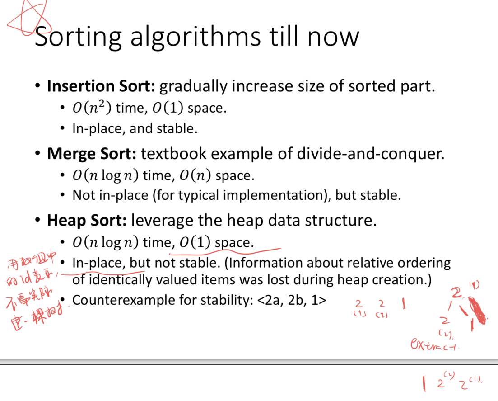
-
选择排序 Selection Sort不稳定，每次选出最小的换到前面去，会打乱相等元素之间的相对位置
-
区别插入排序和冒泡排序，都是稳定的
堆
- 二叉堆
- 最大堆
- 顶部有着最大值
- 每个子堆也是最大堆
- 是完全二叉树
- 最大堆
- 二叉堆寻找一个元素需要
排序问题
- 排序算法的性质
- 插入排序
- 时间， 额外空间
- 稳定
- 归并排序
- 时间， 额外空间
- 稳定
- 堆排序
- 时间， 额外空间
- 不稳定
- 插入排序
- 桶排序
- 将区间划分成相同大小的子区间，称为“桶”。数据放入相应桶中，每个桶先进行排序，再顺次遍历各个桶
- 个桶， 个数。如果输入数据均匀分布，且用插入排序，排序所用时间 ，期望运行时间为 。当 时，时间复杂度是 ，是线性的
- 桶排序是稳定的
- 基数排序（RadixSort）
- 若从高位开始排，需把高位数字相同的作为小桶再继续排，递归，需要额外的桶，所以从低位开始排
- 每一位需要用稳定的排序算法（桶排序），否则排完高位低位的顺序可能乱了
- 排序 个十进制的 位数需要 时间
- 快速排序
- 直观上看，好和差的划分交替出现时，差划分的代价可以被吸收到好划分的代价中去，而得到的划分结果也是好的。时间复杂度与全是好的划分时一样，仍是 ，只是 符号中隐含的常数因子略大一些
- 快排的随机化版本
- 前提假设：输入数据的所有排序是等概率的
- 选主元时随机抽样
- 期望运行时间
问题的上下界
-
问题的上界：对于某个具体的算法才有上界，即最坏情况下算法 所需要的时间
- ， 是问题 的上界
-
问题的下界：解决该问题的所有算法对应的上界，取其最小值，即是下界（解决这个问题的最快的算法，在最坏情况下的时间复杂度）
- ，说明任何算法的最坏时间需要花至少那么多解决问题（？）
-
更大的下界是更强的下界，而上界越小越好
-
如何证明问题的下界
- 使用对手论证, 假设一个 Eve 在与你作对, 然后你问问题, 它回答, 你要问够足够多的信息才有可能正确回答这个问题
- 例如可以使用这种方式证明 是排序问题的一个下界
-
基于比较的排序算法：只能询问两两之间的相对大小，最坏情况下时间复杂度
- 构造一棵决策树，叶子数 ，，所以
选择
-
选择问题：给一个包含 个不同数的集合 ，以及整数 ，找出 中第 个顺序统计量
-
同时找到min和max
- 先两两分组, 然后找出 “局部” 最大值和最小值，然后从这些 “局部” 最大值和最小值中分别找 “全局” 最大值和最小值
- 若 是奇数，将min和max初值都设为第一个元素的值，然后成对地处理余下的元素（两两比较选出相对大的、相对小的）；如果 是偶数，就对前两个元素做一次比较，以决定min和max的初值，之后同理
- 总的比较次数至多
- 且从需要移去的+/-标签数角度分析，需要移去 个标签，需要比较次数 ，即
-
通用选择问题
- 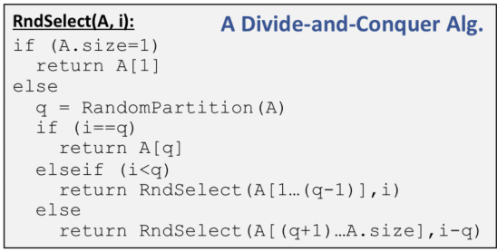
- 定义一个好的划分是能把问题规模减少为常数倍（0.8）。两个好的划分间隔的划分次数的期望是常数
- 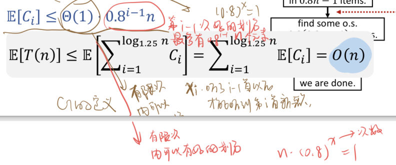
-

- 注意不同于随机快排，partition后只需根据大小对左/右继续处理
树
-
高度：到子孙结点的最长路径
-
分类
- 满二叉树: 任何一个节点要么没有子节点, 要么有两个子节点
- 完全二叉树：除了最后一层都排满，最后一层叶子靠左排（可能有结点只有一个孩子）
- 完美二叉树：每个非叶子结点都有2个孩子，且所有叶子在同一深度
-
树的遍历
- 先序遍历：根-左儿子-右儿子
- 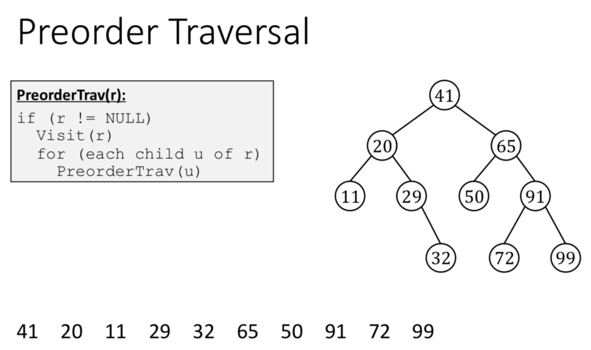
- 后序遍历：左儿子-右儿子-根
- 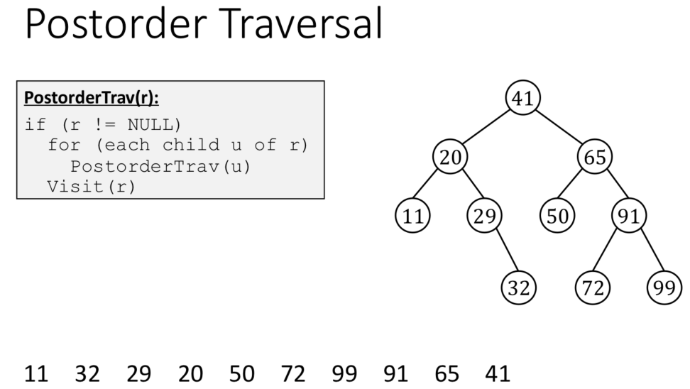
- 中序遍历：左儿子-根-右儿子
- 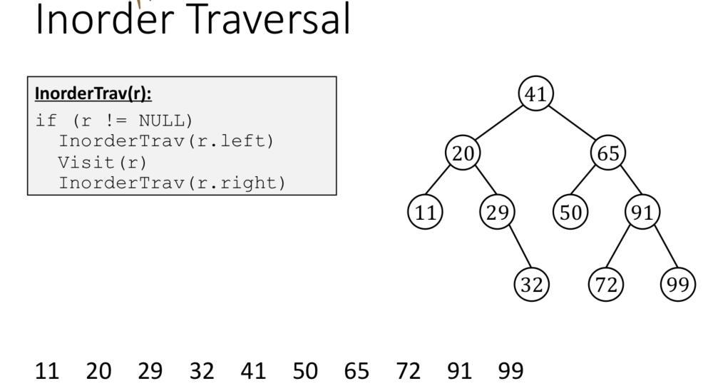
- 先序遍历：根-左儿子-右儿子
-
递归遍历的空间复杂度：最坏 ，栈的深度可能 个
-
层次遍历（Level-order traversal of trees）: 使用一个 FIFO 队列实现
-
二叉搜索树（Binary Search Tree，BST）
-
左子树值<=根<=右子树值
-
找后继/前驱：时间复杂度最坏
-
Remove操作 BSTRemove(T,z)
- Case1: z没有孩子，直接删除，
- Case2: z只有一个孩子，另一个孩子提上来替代 ，
- Case3a: z有两个孩子，且 z.right.left=NULL，左孩子提上来，
- Case3b: z有两个孩子，且 z.right.left≠NULL，找z后继替代，
- 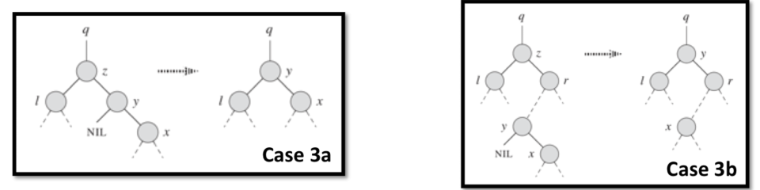
-
-
随机建BST的期望高度是 ， 种输入顺序是等概率/均匀的（和Treap作对比）
-
Treap（平衡树/树堆）
- 每个结点包含key value和priority value
- key value要满足BST性质
- priority value要满足最小堆性质
- 是一种随机的数据结构
- 不一定是完全二叉树，所以不是堆（堆一定是完全二叉树）
- 若结点有不同的key value和priority value，则Treap被唯一确定
- 由最小priority value的结点确定Treap的根
- 根据key value分左右子树
- 另一种理解Treap的角度： 次插入操作得到的BST，且按priority value升序插入
- 无论输入分布如何，Treap的期望高度都是 （和BST作对比）
- 建Treap（插入结点）
- 当要插入一个结点时，随机赋一个priority value
- 按BST的方法插入
- 用左旋/右旋，直到满足最小堆的性质（旋转不影响BST性质）
- 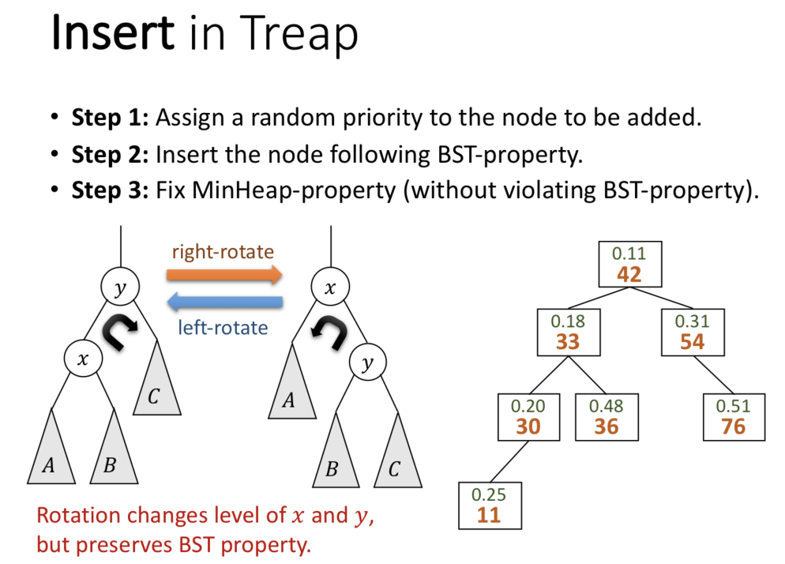
- Remove
- 把要移除的旋转到叶子结点（旋转时一直把priority value小向上旋转）
- 直接remove叶子结点
- 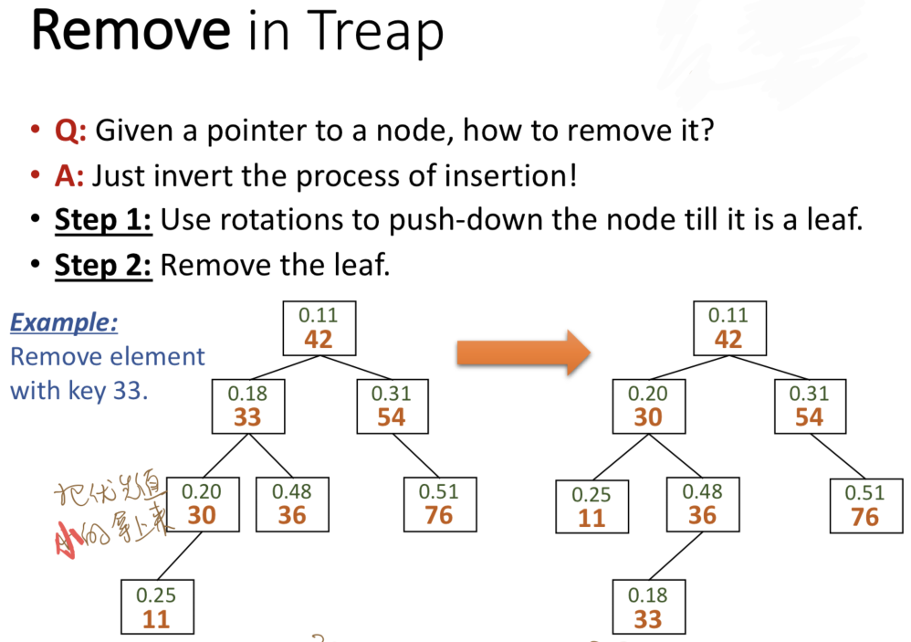
- 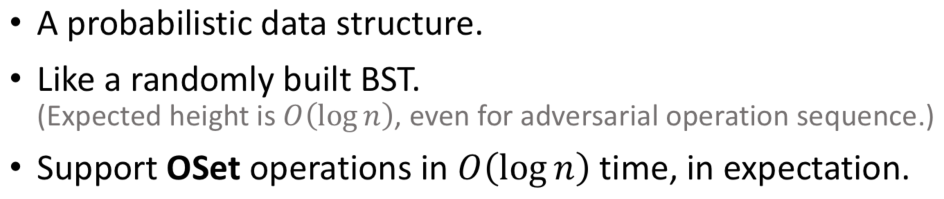
- 每个结点包含key value和priority value
哈希
- 直接寻址表（Direct-address Tables）
- 每个元素都是取自全域 中的一个关键字， 不大。且假设没有两个元素具有相同的关键字
- 用一数组（直接寻址表） 来表示动态集合，每个位置称为“槽”，对应全域 中一关键字。槽 指向集合中一关键字为 的元素，否则为空
- 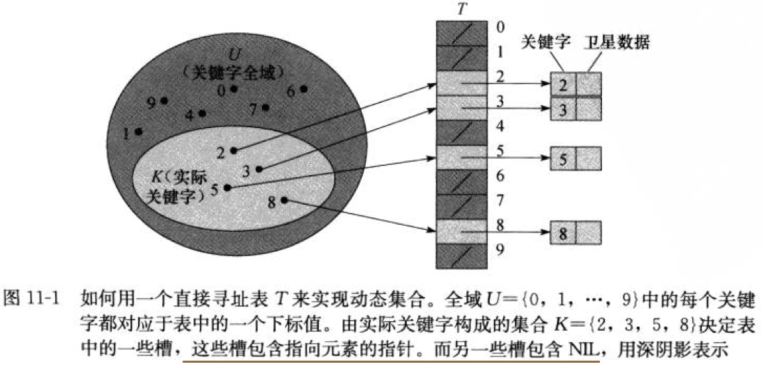
- Search/Insert/Remove都是
- 关键字非整数，如string，也可表示成numbers
- 存储空间不够
- 散列表（hash table）
- 直接寻址中，关键字 的元素被存放在槽 中；散列方式下，该元素存放在 中， 是散列函数
- 。。散列表大小比全域小很多。 个实际的key， 个槽
- 一个具有关键字 的元素被散列到槽 上， 是关键字 的散列值
- 将关键词转换为自然数，如字符串以128为基数按ASCII转换
- 解决冲突
- 链接法（chaining）：散列到 的所有元素存在一个链表中，槽 中有一个指针，指向链表表头；不存在这样的元素则为NIL
- 空间复杂度 ，指针+元素
- 时间复杂度（？）
- 搜索
search用时 , 是链表长度 (也即冲突程度). - 插入
insert用时 , 只需要插入链表头即可. - 删除
remove用时 (给定指针)
- 搜索
- 简单均匀哈希假设（Simple Uniform Hashing）：假设任何一个给定元素等可能地散列到 个槽中的任何一个
- 在简单均匀散列的假设下，对于用链接法解决冲突的散列表，一次成功/不成功的查找所需的平均时间都为 ，其中 为负载因子（load factor）
- 搜索操作的期望最大开销： （即最长链表的期望长度）
- 开放寻址法
- 链接法（chaining）：散列到 的所有元素存在一个链表中，槽 中有一个指针，指向链表表头；不存在这样的元素则为NIL
- 散列函数：一种好的方法导出的散列值，应独立于数据可能存在的任何模式；把相近符号散列到相同槽的可能性最小化
- 除法散列法：
- 选一个不太接近2的整数幂的素数
- 除法散列法：
定义
数据结构基本概念
-
数据元素、数据项
-
数据元素是数据的基本元素，通常作为一个整体进行考虑和处理
-
一个数据元素可由若干数据项组成，数据项是构成数据元素的不可分割的最小单位
-
-
数据结构、数据对象
- 数据结构是相互之间存在一种或多种特定关系的数据元素的集合
- 数据对象是具有相同性质的数据元素的集合，是数据的一个子集
-
数据结构的三要素：逻辑结构、物理结构（存储结构）、数据的运算
-
逻辑结构
- 集合
- 线性结构
- 树形结构
- 图状结构（网状结构）
-
逻辑结构
- 线性结构：线性表、栈、队列
- 非线性结构：树、图、集合
-
物理结构（存储结构）
- 顺序存储
- 链式存储：（逻辑上相邻的元素在物理位置上可以不相邻）
- 索引存储：索引表，表中每项称为索引项，索引项的一般形式是（关键字、地址）
- 散列存储：根据元素的关键字直接计算出该元素的存储地址，又称“哈希存储”
-
数据的运算：
- 运算的定义是针对逻辑结构的，指出运算的功能；
- 运算的实现是针对存储结构的，指出运算的具体操作步骤
-
数据类型、抽象数据类型
- 数据类型：一个值的集合和定义在此集合上的一组操作的总称
- 原子类型、结构类型
- 抽象数据类型（ADT）：不关心物理结构（存储结构）
- 定义了一个ADT，就是定义了数据的逻辑结构、数据的运算。也就是定义了一个数据结构
- 数据类型：一个值的集合和定义在此集合上的一组操作的总称
- 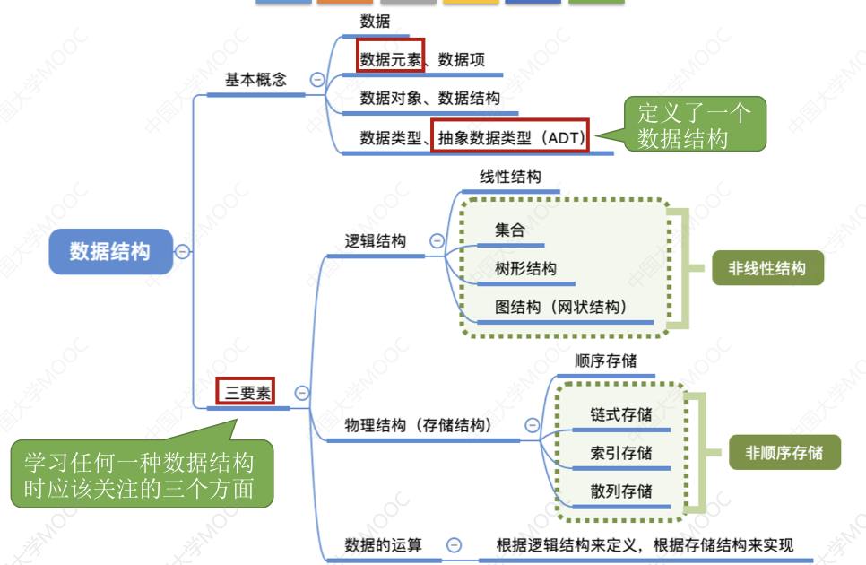
算法基本概念
- 程序 = 数据结构 + 算法
- 算法的特性
- 有穷性（区别于程序）
- 确定性（算法中每条指令必须有确切的含义，对于相同的输入只能得出相同的输出）
- 可行性
- 零个或多个输入，一个或多个输出
- “好”的算法的特性
- 正确性
- 可读性
- 健壮性（算法能处理一些异常状况）
- 高效率与低存储量需求
算法效率的度量
- 时间复杂度、空间复杂度
- 算法原地工作——算法所需内存空间为常量‘
线性表
-
线性表是具有相同数据类型的 个数据元素的有限序列
-
什么时候要传入引用“&”
- 对参数的修改结果需要“带回来”
- 如果不加“&”，则被调用函数中处理的是参数数据的复制品
-
线性表
- 逻辑结构
- 基本运算/操作
- 存储/物理结构
- 顺序表（顺序存储）
- 链表（链式存储）
- 单链表、双链表、循环链表、静态链表
-
动态申请和释放内存空间
- C：malloc、free函数
- C++：new、delete关键字
-
顺序表
- 顺序表的特点
- 随机访问，即可以在 时间内找到第 个元素
- 存储密度高
- 拓展容量不方便
- 插入、删除数据元素不方便
- 静态分配
- 动态分配
- 顺序表存满时，可再用 malloc 动态拓展顺序表的最大容量
- 需要将数据元素复制到新的存储区域，并用 free 函数释放原区域
- 顺序表的特点
静态链表
- 静态链表借助数组来描述线性表的链式存储结构，结点包括数据域data和指针域next，这里的指针是结点的相对地址（数组下标），又称游标
栈
- 栈是只允许在一端进行插入或删除操作的线性表
- 特点：后进先出
- 从栈输出的合法序列：卡特兰数
- 链栈：采用链式存储的栈称为链栈，链栈的优点是便于多个栈共享存储空间和提高效率，且不存在栈满上溢的情况。通常用单链表实现，并规定所有操作都是在单链表的表头进行的
队列
-
队列是只允许在一端进行插入，在另一端删除的线性表
-
特点：先进先出
-
循环队列：用模运算将存储空间在逻辑上变成了“环状”
- 队列已满的条件：队尾指针的再下一个位置是队头，即
- 队列元素个数：
-
链队列：队列的链式表示。是一个同时带有队头指针和队尾指针的单链表
双端队列
- 允许从两端插入、两端删除的线性表
三对角矩阵
- 也称带状矩阵。对于 阶矩阵 中的任意一个元素 ，当 时，有 。
- 所有非零元素集中在以主对角线为中心的3条对角线的区域，其他区域的元素都为零
稀疏矩阵
- 适用于压缩存储稀疏矩阵的存储结构
- 三元组表
- 十字链表
KMP
- 利用next数组进行匹配（主串指针不回溯）
- next数组的作用：当模式串的第 个字符失配时，从模式串的第 next[j] 的继续往后匹配
- 最坏时间复杂度 (m是模式串长度，n是主串长度)
第五章 树
5.1 树的基本概念
-
结点的度：有几个孩子（分支）
-
树的度：各结点的度的最大值
-
有序树：逻辑上看，树中结点的各子树从左至右是有次序的，不能互换
-
无序树：逻辑上看，树中结点的各子树从左至右是无次序的，可以互换
-
森林：森林是 棵互不相交的树的集合（，可为0，空森林）
-
度为 的树 VS 叉树
-
度为 的树
- 任意结点的度 （最多 个孩子）
- 至少有一个结点度 （有 个孩子）
- 一定是非空树，至少有 个结点
-
叉树
- 任意结点的度 （最多 个孩子）
- 允许所有结点的度都
- 可以是空树
-
-
高度为 的 叉树至少有 个结点
-
高度为 、度为 的树至少有 个结点
5.2 二叉树的概念
-
二叉树的基本概念
- 二叉树是 （）个结点的有限集合
- 或者为空二叉树，即
- 或者由一个根结点和两个互不相交的被称为根的左子树和右子树组成。左子树和右子树又分别是一棵二叉树
- 特点
- 每个结点至多只有两棵子树
- 左右子树不能颠倒（二叉树是有序树）（区别于度为2的有序树）
- 二叉树是 （）个结点的有限集合
-
满二叉树：叶结点都集中在二叉树的最下一层，并且除叶结点之外的每个结点度数均为2
-
完全二叉树：就是对应相同高度的满二叉树缺失最下层最右边的一些连续叶结点
- 只有==最后两层==可能有叶子结点
- 最多只有==一个==度为1的结点
-
二叉排序树：一棵二叉树或者是空二叉树，具有以下特性：
- 左子树上所有结点的==关键字==均小于根结点的==关键字==
- 右子树上所有结点的关键字均大于根结点的关键字
-
平衡二叉树（AVL, 人名）：树上任意一个结点的左子树和右子树的深度之差不超过1
- 平衡二叉树能有更高的搜索效率
-
线索二叉树：用空指针来存放指向其前驱或后继的指针，可以像遍历单链表那样方便地遍历二叉树。引入二叉树是为了加快查找结点前驱和后继的速度
-
完全二叉树的一些结论
- 对完全二叉树，若 ，则结点 为分支结点，否则为叶结点
- 非空二叉树上的叶结点数等于度为2的结点数加1，即
- 完全二叉树中，，也等价于
- 根据 ，右边的不等号推出
- 根据 ，左边的不等号推出
- 完全二叉树最多==只有一个度为1==的结点，即 或
- ，推出 一定是奇数
- 若完全二叉树有 （偶数）个结点，则必有
- 若完全二叉树有 （奇数）个结点，则必有
-
二叉树的存储结构
- 顺序存储
- 二叉树的顺序存储中，一定要把二叉树的结点编号与完全二叉树对应起来
- 最坏情况：高度为 且只有 个结点的单支树（所有结点只有右孩子），也至少需要 个存储单元
- 链式存储
- 在含有 个结点的==二叉链表==中，含有 == 个空链表==
- 三叉链表：加一个父节点指针，方便找父结点
- 顺序存储
5.3 二叉树的遍历和线索二叉树
-
二叉树的遍历
- 算数表达式的“分析树”
- 先序遍历 前缀表达式
- 中序遍历 中缀表达式（需要加界限符）
- 后序遍历 后缀表达式
- 空间复杂度
- 最坏情况， 个结点且深度为
- 每个结点都会被路过3次
- 先序遍历——第一次路过时访问结点
- 中序遍历——第二次路过时访问结点
- 后序遍历——第三次路过时访问结点
- 算数表达式的“分析树”
-
二叉树的层序遍历
-
由遍历序列构造二叉树
- 若只给出一棵二叉树的前/中/后/层序遍历序列中的一种，不能唯一确定一棵二叉树
- 能得到==唯一确定==的二叉树：
- 前序+中序遍历序列
- 后序+中序遍历序列
- 层序+中序遍历序列
- ==前序、后序、层序==序列两两组合==无法唯一确定==一棵二叉树
-
线索二叉树
- 线索二叉树：在二叉链表中，用==空指针==来存放指向其前驱或后继的指针
- ==作用==：方便从一个指定结点出发，找到其前驱、后继；方便遍历
- 个结点的二叉树，有 个空链域，可用来记录前驱、后继的信息
- 线索：指向前驱、后继的指针
- ltag = 0，说明 lchild 域指示结点的左孩子；ltag = 1，lchild 域指示结点的前驱
- 中序线索二叉树、先序线索二叉树、后序线索二叉树
- 中序线索二叉树——线索指向中序前驱、中序后继
- 线索二叉树：在二叉链表中，用==空指针==来存放指向其前驱或后继的指针
-
二叉树的线索化
-
线索二叉树 找前驱/后继
- 先序遍历中，左右子树中的结点只可能是根的后继，不可能是前驱。所以只能从头开始先序遍历（除非改用三叉链表可找到父结点）
- 后序遍历也是
- 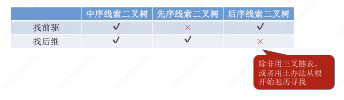
5.4 树的存储结构
-
双亲表示法（顺序存储）
- 用数组==顺序存储==各个结点。每个结点中保存数据元素、指向==双亲结点（父结点）的”指针“==
- 也可以用来存储森林。每棵树的根结点双亲指针 = -1
- ==优点==：找双亲（父结点）很方便
- ==缺点==：找孩子不方便，只能从头到尾遍历整个数组
- 应用：并查集
- 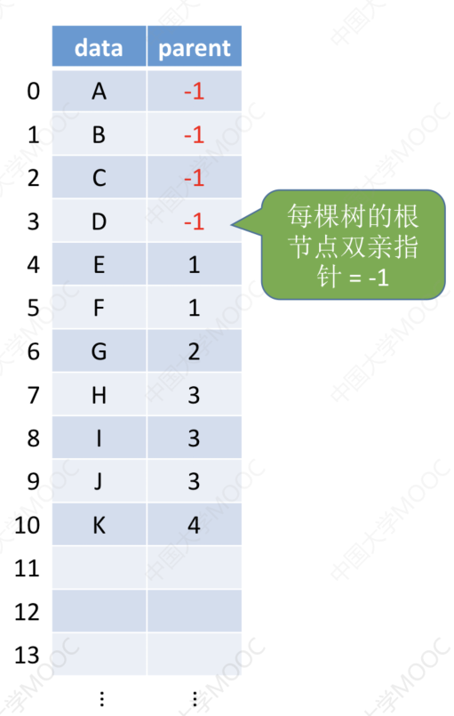
-
孩子表示法（顺序+链式存储）
- 用数组==顺序存储==各个结点。每个结点中保存==数据元素、孩子链表头指针==
- 用孩子表示法存储森林，需要记录多个根的位置
- ==优点==：找孩子很方便
- ==缺点==：找双亲（父结点）不方便，只能遍历每个链表
- 应用：服务流程树
- 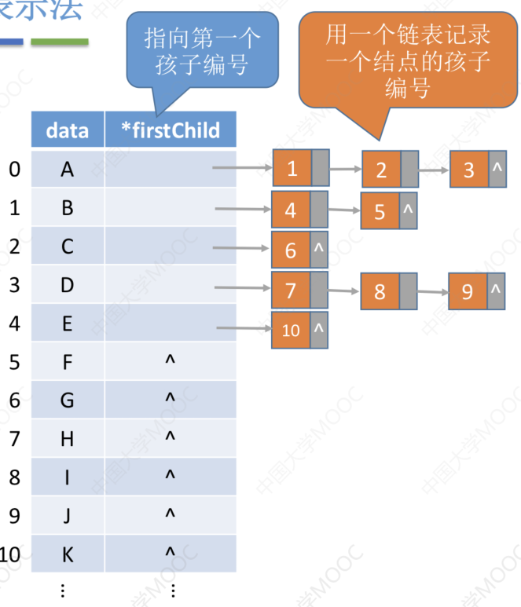
-
孩子兄弟表示法（链式存储）
- 采用==二叉链表==实现，每个结点内保存==数据元素==和==两个指针==，一个指针指向==第一个孩子==，另一个指针指向==右边一个兄弟==（左孩子右兄弟）
- 森林中每棵树的根结点视为平级的兄弟关系
- 从存储视角来看形态上==与二叉树类似==（树、森林可以转化为对应的二叉树）
- 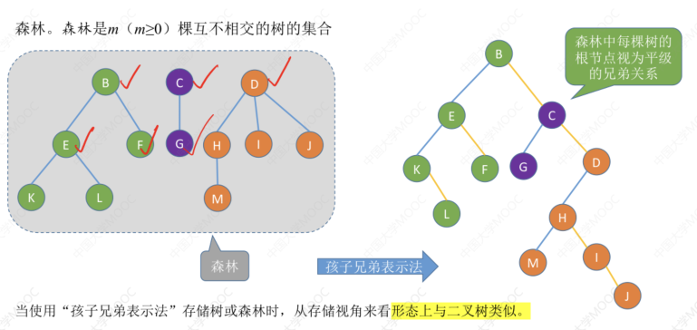
-
树的顺序存储结构 VS 二叉树的顺序存储结构
- 树的顺序存储结构：数组下标代表结点的编号，下标中所存的内容指示了结点之间的关系
- 二叉树的顺序存储结构：数组下标既代表了结点的编号，又指示了二叉树中各结点之间的关系
-
树、森林与二叉树的转换 （孩子兄弟表示法（左孩子右兄弟））
- 树 二叉树
- 森林 二叉树
- 二叉树 树
- 二叉树 森林
-
树和森林的遍历（背！）
- 树的遍历
- 树的先根遍历
- ==树的先根遍历序列 = 相应二叉树的先序序列==
- 树的先根遍历：dfs
- 树的后根遍历
- ==树的后根遍历序列 = 相应二叉树的中序序列==
- 树的后根遍历：dfs
- 树的层序遍历
- 用队列实现
- 树的层序遍历：bfs
- 树的先根遍历
- 森林的遍历
- 先序遍历森林 = 对二叉树的先序遍历
- 效果等同于依次对各个树进行先序遍历
- 中序遍历森林 = 对二叉树的中序遍历
- 效果等同于依次对各个树进行后根遍历
- 先序遍历森林 = 对二叉树的先序遍历
- 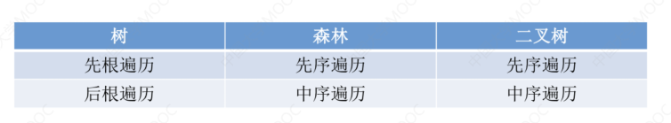
- 树的遍历
5.5 树与二叉树的应用
-
带权路径长度
- ==结点==的带权路径长度：从树的根到该结点的路径长度（经过的边数）与该结点上权值的乘积
- ==树==的带权路径长度：树中所有==叶结点==的带权路径长度之和（WPL, weighted path length）
-
哈夫曼树的定义
- 在含有 个带权叶结点的二叉树中，其中==带权路径长度（WPL）最小的二叉树==称为哈夫曼树，也称为最优二叉树
-
哈夫曼树的构造
- 每个初始结点最终都成为叶结点，且权值越小的结点到根结点的路径长度越大
- 哈夫曼树的结点总数为
- 哈夫曼树中不存在度为 1 的结点
- 哈夫曼树并不唯一，但WPL必然相同且为最优
-
哈夫曼编码
- 可变长度编码：允许对不同字符用不等长的二进制位表示
- 前缀编码：没有一个编码是另一个编码的前缀（在树中只能作叶子结点，不能作分支结点）
- 由哈夫曼树得到哈夫曼编码
- 字符集中的每个字符作为一个叶子结点，各个字符出现的==频度作为结点的权值==，构造哈夫曼树。
- 可以把树的左指针看作二进制的0，右指针看作二进制的1。
- 可用于数据压缩
-
并查集
-
如何表示”集合“关系？
- 用互不相交的树，表示多个”集合“
-
如何判断两个元素是否属于同一个集合？
- 分别查到两个元素的根，判断根结点是否相同即可
-
三要素
- 逻辑结构：元素之间为”集合“关系
- ==存储结构==：顺序存储，每一个集合组织成一棵树，用”双亲表示法“
- 基本操作：初始化（-1），Find, Union
-
并查集是逻辑结构——集合的一种具体实现，只进行”并“和”查“两种基本操作
-
==Union操作的优化==：让小树合并到大树
- 用根结点的绝对值表示树的结点总数
- 该方法构造的树高不超过
-
==Find操作的优化（压缩路径）==
- 压缩路径——Find操作，先找到根结点，再将查找路径上所有结点都挂到根结点下
- 每次Find操作，先找根，再”压缩路径“，可使树的高度不超过 。 是一个增长很缓慢的函数（远低于 ），对于常见的 值，通常 ，因此优化后并查集的Find、Union操作时间开销都很低
- 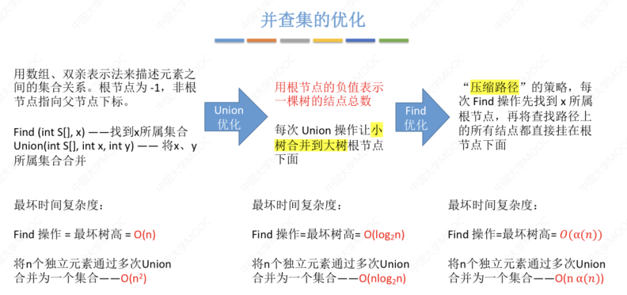
-
第六章 图
6.1 图的基本概念
-
无向边
-
有向边（也称弧） 为从顶点 到顶点 的弧。 称为弧尾， 称为弧头
-
简单图
- 不存在重复边
- 不存在顶点到自身的边
-
多重图
- 图 中某两个结点之间的边数多于一条，又允许顶点通过同一条边和自己关联
-
无向图的全部顶点的度的和等于边数的2倍：
-
有向图中顶点 的度等于入度和出度之和：
-
简单路径：在路径序列中，顶点不重复出现的路径称为简单路径
-
简单回路：除第一个顶点和最后一个顶点外，其余顶点不重复出现的回路称为简单回路
-
路径长度：路径上边的数目
-
点到点的距离：从顶点 出发到顶点 的最短路径若存在，则此路径的长度称为从 到 的距离。若从 到 根本不存在路径，则记该距离为无穷
-
连通图、强连通图
-
==无向图==中，若从顶点 到顶点 有路径存在，则称 和 是==连通==的
- 对于 个顶点的无向图
- 若 是连通图，则最少有 条边
- 若 是非连通图，则最多可能有 条边
- 对于 个顶点的无向图
-
==有向图==中，若从顶点 到顶点 和从顶点 到顶点 之间都有路径，则称这两个顶点是==强连通==的
- 对于 个顶点的有向图 ，若 是强连通图，则最少有 条边（形成回路）
-
-
若有满足 的子图 ，则称其为 的生成子图
-
连通分量：无向图中的极大连通子图称为连通分量（子图必须连通，且包含尽可能多的顶点和边）
-
强连通分量：有向图中的极大强连通子图称为有向图的强连通分量（子图必须强连通，同时保留尽可能多的边）
-
生成树
- 连通图的生成树是包含图中全部顶点的一个极小连通子图（边尽可能的少，但要保持连通）
-
生成森林
- 在非连通图中，连通分量的生成树构成了非连通图的生成森林
-
几种特殊形态的图
-
无向完全图：无向图中任意两个顶点之间都存在边
-
有向完全图：有向图中任意两个顶点之间都存在方向相反的两条弧
-
边数很少的图称为稀疏图；反之称为稠密图
-
一般 时，可以将 视为稀疏图
-
树：不存在回路，且连通的无向图
-
有向树：一个顶点的入度为0、其余顶点的入度均为1的有向图
-
6.2 图的存储及基本操作
-
图的存储
- 邻接矩阵
- 适合用于存储稠密图
- 无向图的邻接矩阵是对称矩阵，可以压缩存储（只存储上三角区/下三角区）
- 设邻接矩阵 ，元素为0/1，则 等于由顶点 到顶点 长度为 的路径的数目
- 邻接表（顺序+链式存储）
- 无向图：边结点的数量是 ，整体空间复杂度是
- 有向图：空间复杂度
- 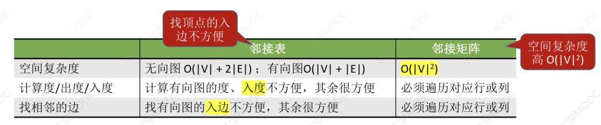
- 十字链表（==存储有向图==）
- 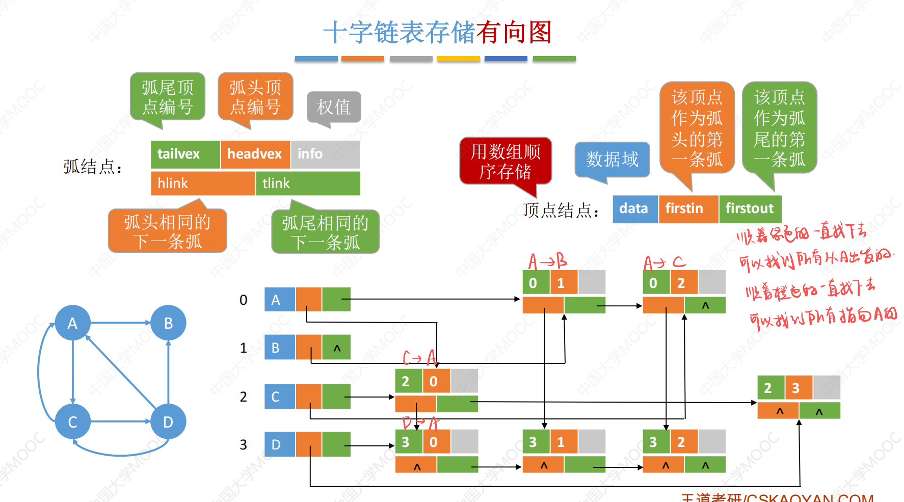
- 空间复杂度
- 邻接多重表（==存储无向图==）
- 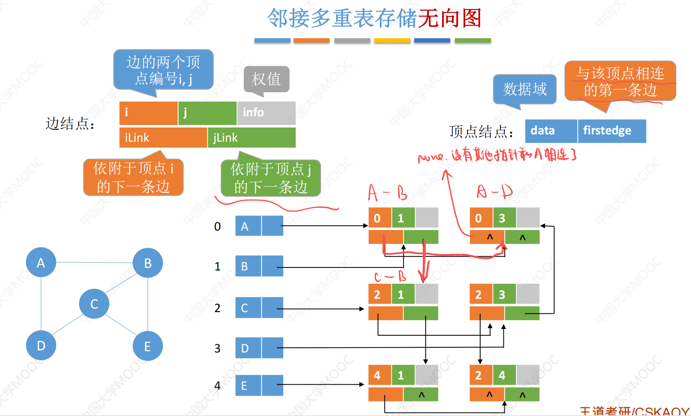
- 空间复杂度：
- 删除边、删除节点等操作很方便
- 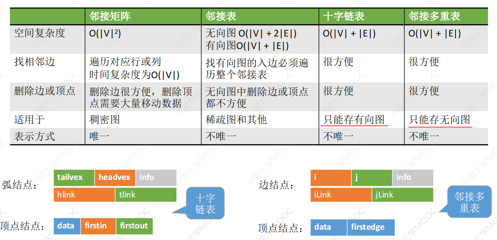
- 邻接矩阵
-
图的基本操作
- 从图 中删除顶点
- 无向图：邻接矩阵 ，邻接表需要
- 有向图：邻接矩阵 ，邻接表删出边 ，删入边
- 求 中顶点 的第一个邻接点（可能没有）
- 无向图/有向图：邻接矩阵 ，邻接表
- 从图 中删除顶点
6.3 图的遍历
-
广度优先遍历
- 同一个图的邻接矩阵表示方式唯一，因此广度优先遍历序列唯一
- 同一个图邻接表表示方式不唯一，因此广度优先遍历序列不唯一
- 复杂度
- ==空间复杂度==：最坏情况，辅助队列大小为
- **时间复杂度：**邻接矩阵：；邻接表：
- 广度优先生成树
- 广度优先生成树由广度优先遍历过程确定。
- 由于邻接表的表示方式不唯一，因此基于邻接表的广度优先生成树也不唯一
- 遍历非连通图可得广度优先生成森林
-
深度优先遍历
- 复杂度
- 空间复杂度：来自函数调用栈，最坏情况，递归深度为
- 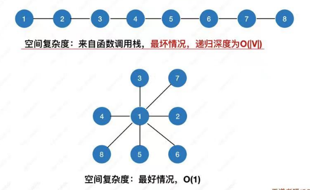
- **时间复杂度：**邻接矩阵：；邻接表：
- 复杂度
-
图的遍历和图的连通性
- 对于无向图，调用BFS/DFS函数的次数=连通分量数
- 对于有向图
- 若从起始顶点到其他顶点都有路径，则只需调用1次DFS/BFS函数
- 对于强连通图，从任一顶点出发都只需调用1次DFS/BFS函数
6.4 图的基本应用
-
最小生成树
- 边权值最小的生成树
- 只有连通图才有生成树，非连通图只有生成森林
- Prim算法（选点）
- 从某一个顶点开始构建生成树，每次将代价最小的新顶点纳入生成树，直到所有顶点都纳入为止
- 时间复杂度
- 适合用于边稠密图
- Kruskal算法（选边）
- 每次选择一条权值最小的边，使这条边的两头连通（原本已经连通的就不选），直到所有结点都连通
- 时间复杂度
- 适合用于边稀疏图
- 初始时要将各条边按权值排序
-
最短路径问题
- 单源最短路径
- BFS 算法（无权图）
- 确定了根之后，广度优先生成树一定是高度最小的生成树
- Dijkstra 算法（带权图、无权图）
- 循环遍历所有结点，找到还没确定最短路径，且 dist 最小的顶点 ，令 final[i]=true
- 检查所有邻接自 的顶点，若其 final 值为 false，则更新 dist 和 path 信息
- 基于贪心策略
- 时间复杂度：
- 不适用于有负权值的带权图
- BFS 算法（无权图）
- 各顶点间的最短路径
- Floyd 算法（带权图、无权图）
- 求出每一对顶点之间的最短路径
- 使用动态规划思想
- 时间复杂度：；空间复杂度：
- Floyd 算法可以用于负权值带权图，但不能解决带有“负权回路”的图
- Floyd 算法（带权图、无权图）
- 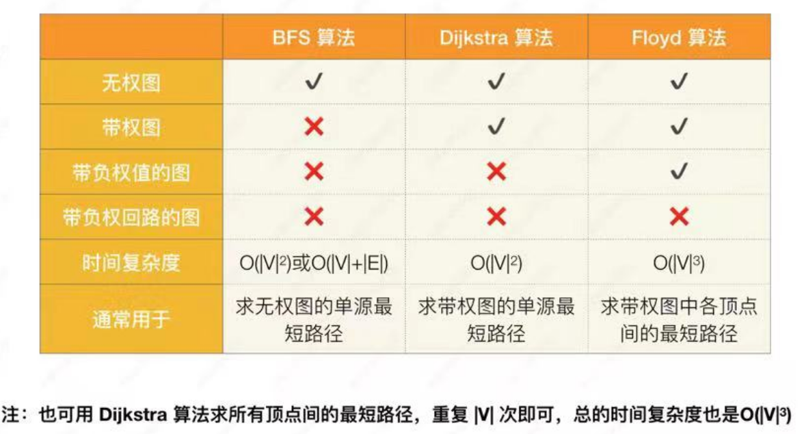
- 单源最短路径
-
有向无环图描述表达式
- 把各个操作数不重复地排成一排
- 标出各个运算符的生效顺序（先后顺序有点出入无所谓）
- 按顺序加入运算符，注意“分层”
- 从底向上逐层检查同层的运算符是否可以合体
-
拓扑排序
-
AOV网（Activity on Vertex Network，用顶点表示活动的网）
- 用 DAG 图（有向无环图）表示一个工程。顶点表示活动，有向边 表示活动 必须先于活动 进行
- 每个 AOV 网都有一个或多个拓扑排序序列
-
拓扑排序
- 由一个有向无环图的顶点组成的序列，当且仅当满足下列条件时，称为该图的一个拓扑序列
- 每个顶点出现且只出现一次
- 若顶点 A 在序列中排在顶点 B 的前面，则在图中不存在从顶点 B 到顶点 A 的路径
- 实现
- 从 AOV 网中选择一个没有前驱（入度为0）的顶点并输出（用栈/队列保存度为0的顶点）
- 从网中删除该顶点和所有以它为起点的有向边
- 重复前两步直到当前的 AOV 网为空 或 当前网中不存在无前驱的顶点为止（说明有回路）
- 时间复杂度
- 邻接表
- 邻接矩阵
- 由一个有向无环图的顶点组成的序列，当且仅当满足下列条件时，称为该图的一个拓扑序列
-
逆拓扑排序
- 从 AOV 网中选择一个没有后继（出度为0）的顶点并输出
- 从网中删除该顶点和所有以它为终点的有向边
- 重复前两步直到当前的 AOV 网为空
-
DFS 实现逆拓扑排序：在顶点退栈前输出
-
由于 AOV 网中各顶点的地位平等，每个顶点编号是人为的，因此可以按拓扑排序的结果重新编号，生成 AOV 网的新的邻接存储矩阵，这种邻接矩阵可以是三角矩阵；但对于一般的图来说，若其邻接矩阵是三角矩阵，则存在拓扑矩阵；反之则不一定成立
-
关键路径
-
AOE 网
- 在带权有向图中，以顶点表示事件，以有向边表示活动，以边上的权值表示完成该活动的开销，称之为用边表示活动的网络
- 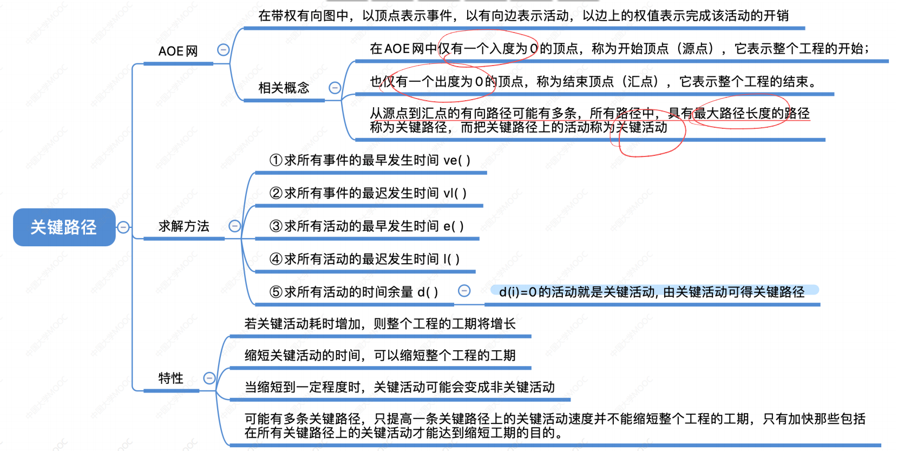
-
AOE 网中的边有权值；而 AOV 网中的边无权值，仅表示顶点之间的前后关系
-
正确的：在AOE图中，关键路径上的活动的时间延长多少，整个工程的时间也就随之延长多少
-
错误的：缩短关键路径上任意一个关键活动的持续时间可缩短关键路径长度
第七章 查找
7.1 查找的基本概念
-
关键字：唯一标识数据元素的数据项
-
静态查找：只需要查找操作（顺序查找、折半查找、散列查找）
-
动态查找：除了查找，还需要增/删数据元素（二叉排序树的查找、散列查找）
-
查找算法的效率评价
- 查找长度：在查找运算中，需要对比关键字的次数称为查找长度
- 平均查找长度（ASL）：所有查找过程中进行关键字的比较次数的平均值
- 通常考虑查找成功、查找失败两种情况下的ASL
7.2 顺序查找和折半查找
-
顺序查找
- 用查找判定树分析 ASL
- 个失败结点， 个成功结点
- 一个成功结点的查找长度 = 自身所在层数
- 一个失败结点的查找长度 = 其父结点所在层数
- 默认情况下，各种失败情况或成功情况都等概率发生
- 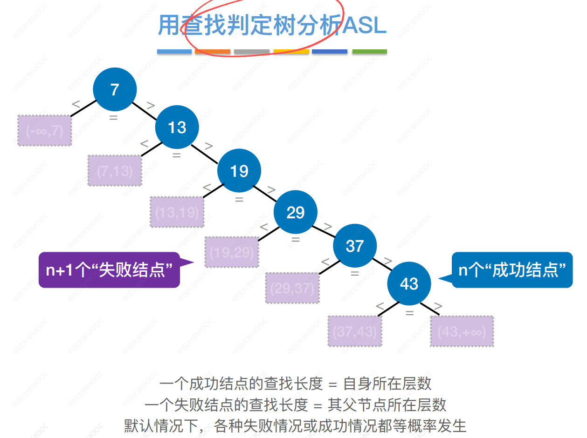
- 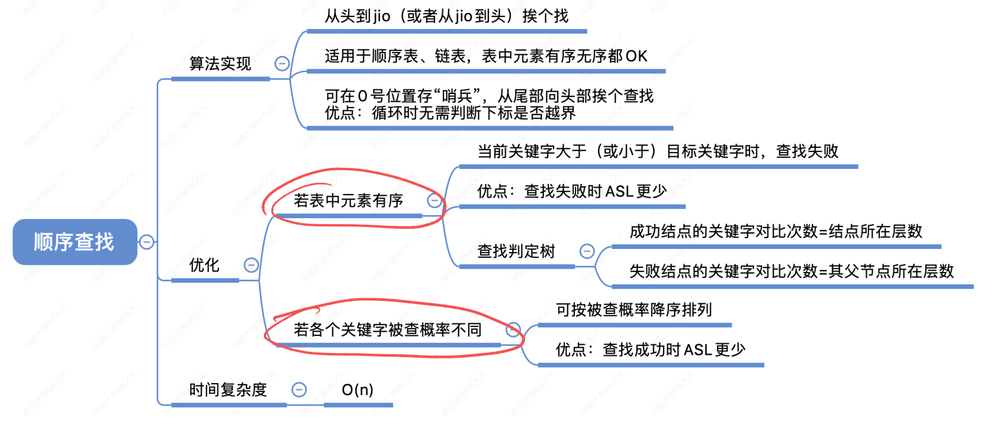
- 用查找判定树分析 ASL
-
折半查找
- 算法思想：仅适用于有序的顺序表
- 判定树
- 构造：
- 由 mid 所指元素将原有元素分割到左右子树中
- Key：右子树结点数 - 左子树结点数 = 0或1
- 特性：
- 折半查找的判定树是平衡的二叉排序树（左<中<右）
- 折半查找判定树，只有最下面一层是不满的
- 若查找表有 个关键字，则失败结点有 个（等于成功结点的空链域数量）
- 树高 （不包含失败节点）
- 构造：
- 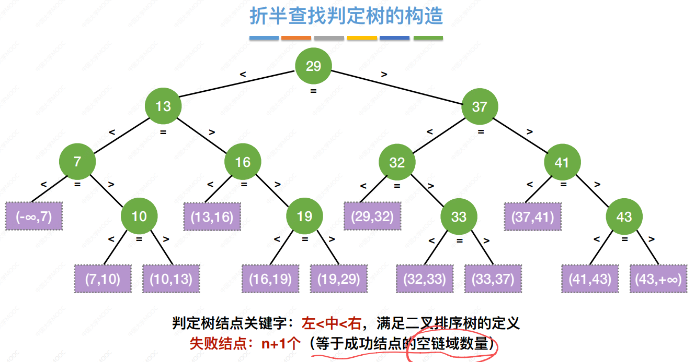
- 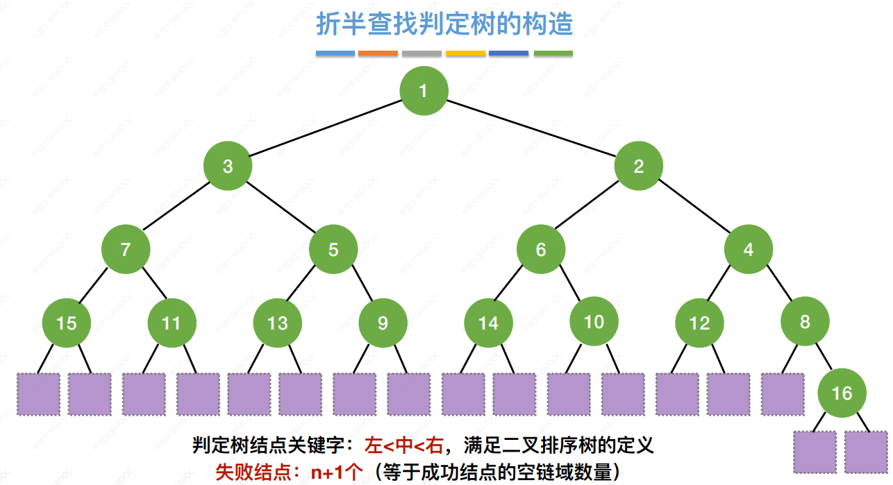 - 主要看奇偶
-
分块查找
-
又称“索引顺序查找”，数据分块存储，块内无序、块间有序
-
算法思想
- 索引表中记录每个分块的最大关键字、分块的区间
- 先查索引表（顺序或折半）、再对分块内进行顺序查找
- 若索引表中不包含目标关键字，则折半查找索引表最终停在 low > high，要在low所指分块中查找
-
ASL
- 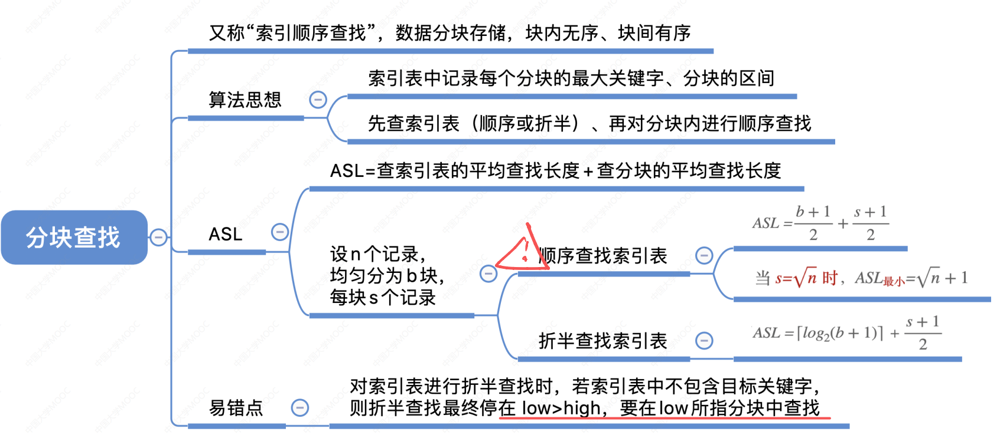
7.3 树形查找
-
二叉排序树（BST，Binary Search Tree），又称二叉查找树
-
左子树上所有结点的关键字均小于根结点的关键字；右子树上所有结点的关键字均大于根结点的关键字
-
非递归查找：空间复杂度 ；递归查找：空间复杂度
-
二叉排序树的删除：先搜索找到目标结点
- ① 若被删除结点 是叶结点，则直接删除，不会破坏二叉排序树的性质
- ② 若结点 只有一棵左子树或右子树，则让 的子树成为 父结点的子树，替代 的位置
- ③ 若结点 有左、右两棵子树，则令 的直接后继（或直接前驱）替代 ，然后从二叉排序树中删去这个直接后继（或直接前驱），这样就转换成了第一或第二种情况
- 的后继： 的右子树中最左下结点（该结点一定没有左子树）
-
查找长度：在查找运算中，需要对比关键字的次数称为查找长度
- 平均查找长度：最好情况 ；最坏情况
- 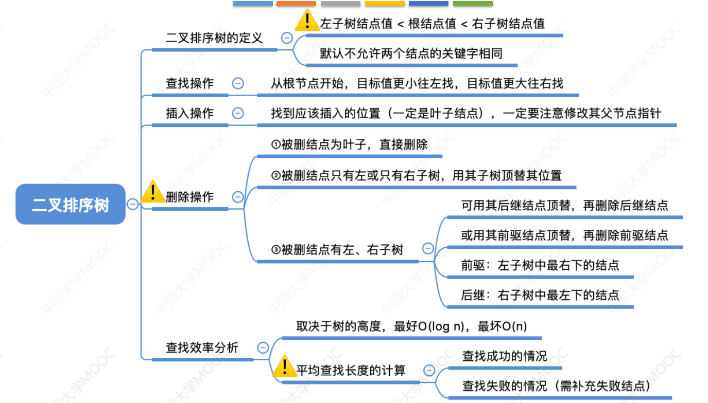
-
最坏：用逐点插入法构造二叉排序树，若先后插入的关键字有序，二叉排序树的深度最大
-
平衡二叉树（AVL）
-
定义：树上任一结点的左子树和右子树的高度之差不超过1
- 结点的平衡因子 = 左子树高 - 右子树高
- 平衡二叉树结点的平衡因子的值只可能是 -1、0、1
-
平衡二叉树的插入
- 每次调整的对象都是“最小不平衡子树”。只要将最小不平衡子树调整平衡，则其他祖先结点都会恢复平衡
- 调整最小不平衡子树
- LL：在 的左孩子的左子树中插入导致不平衡
- 右单旋转
- RR：在 的右孩子的右子树中插入导致不平衡
- 左单旋转
- LR：在 的左孩子的右子树中插入导致不平衡
- 先左后右双旋转
- RL：在 的右孩子的左子树中插入导致不平衡
- 先右后左双旋转
- LL：在 的左孩子的左子树中插入导致不平衡
-
查找效率分析
- 假设以 表示深度为 的平衡树中含有的最少结点数
- 有 ，并且有 ====
- 可以证明含有 个结点的平衡二叉树的最大深度为 ，平均查找长度也是
- 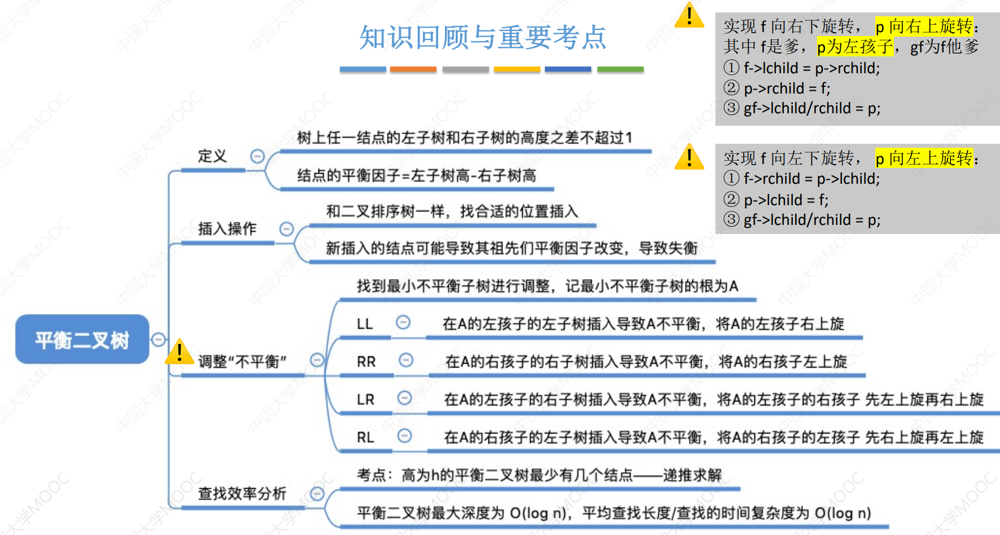
-
平衡二叉树删除操作
-
① 删除结点（方法同“二叉排序树”）
-
② 一路向北找到最小不平衡子树，找不到就结束
-
③ 找最小不平衡子树下，“个头”最高的儿子、孙子
-
④ 根据孙子的位置，调整平衡（LL/RR/LR/RL）
- 孙子在LL：儿子右单旋
- 孙子在RR：儿子左单旋
- 孙子在LR：孙子先左旋，再右旋
- 孙子在RL：孙子先右旋，再左旋
-
⑤ 如果不平衡向上传导，继续 ②
- 对最小不平衡子树的旋转可能导致树变矮，从而导致上层祖先不平衡（不平衡向上传递）
-
-
平衡二叉树删除操作时间复杂度 =
-

-
红黑树
- 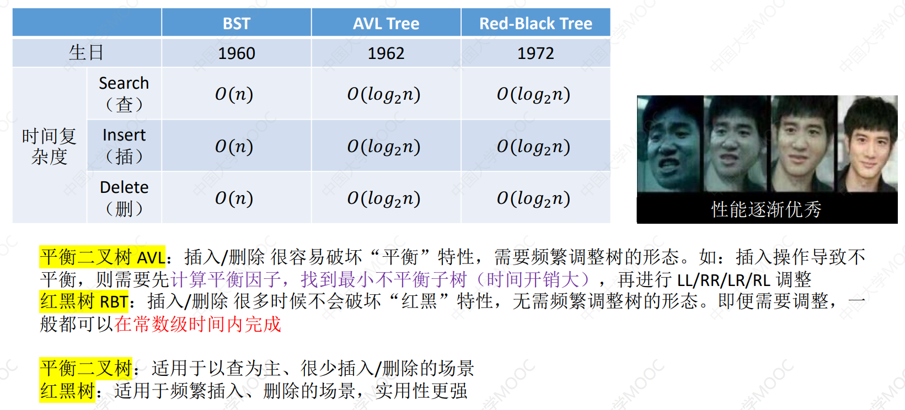 - 从AVL树到红黑树，降低了动态操作时调整的频率 - 对于一棵动态查找树，如果插入和删除操作比较少，查找操作比较多，采用AVL树比较合适，否则采用红黑树更合适
-
定义
- 红黑树是二叉排序树（BST） 左子树结点值 根结点值 右子树结点值
- 与普通 BST 相比
- 每个结点或是红色，或是黑色
- 根结点是黑色的
- 叶结点（外部结点、NULL结点、失败结点）均是黑色的
- 不存在两个相邻的红结点（即红结点的父节点和孩子结点均是黑色）
- 对每个结点，从该结点到任一叶结点的简单路径上，所含黑结点的数目相同
- 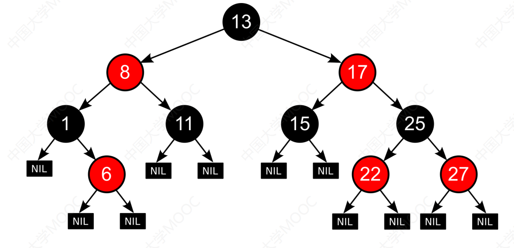
-
结点的“黑高” bh：从某结点出发（不含该结点）到达任一空叶结点的路径上黑结点总数
-
性质
-
从根结点到叶结点的最长路径不大于最短路径的2倍
-
有 个内部结点的红黑树高度
- 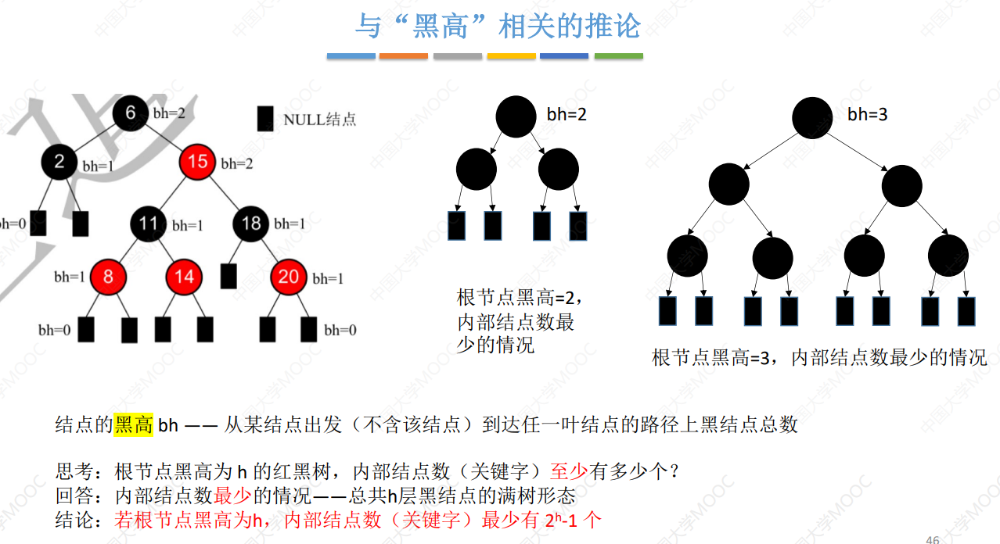
- 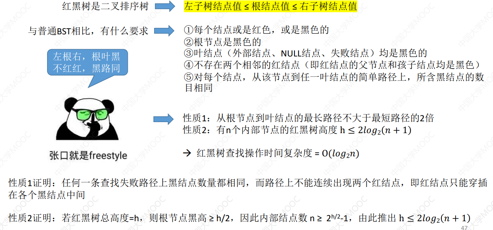
- 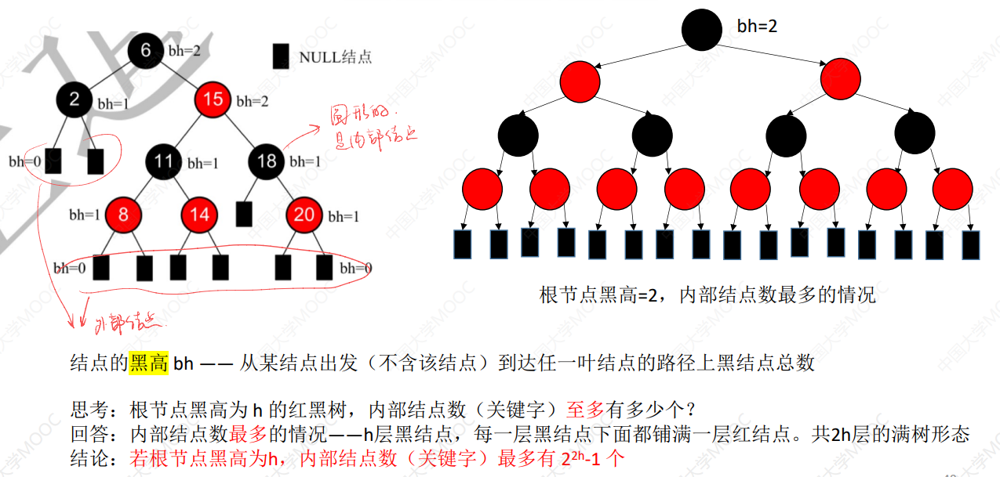
-
7.4 B树和B+树
-
B树
-
定义：多路平衡查找树，B树中所被允许的孩子个数的最大值称为B树的阶，通常用 表示。
- 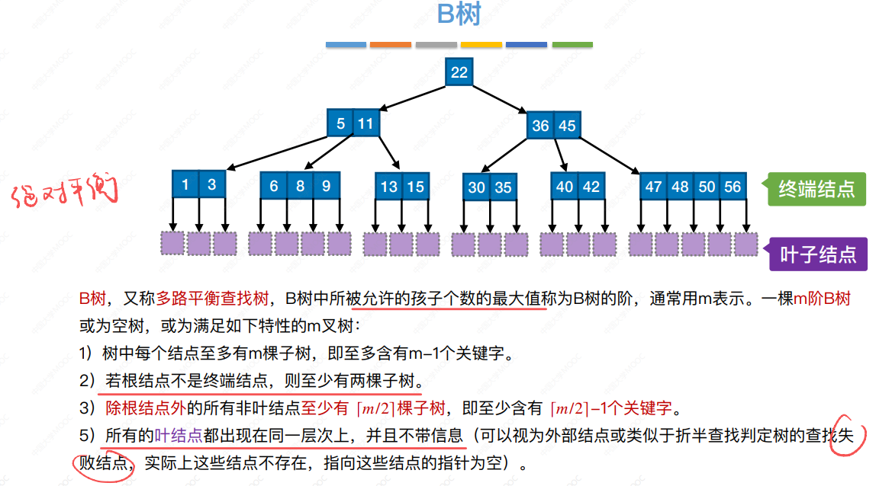
- 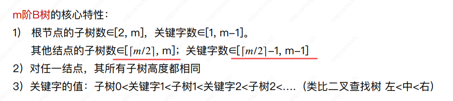
- 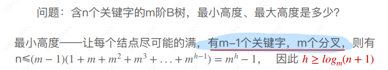 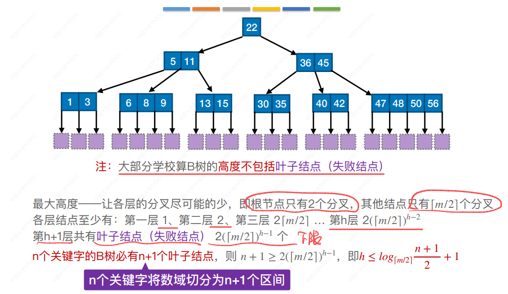 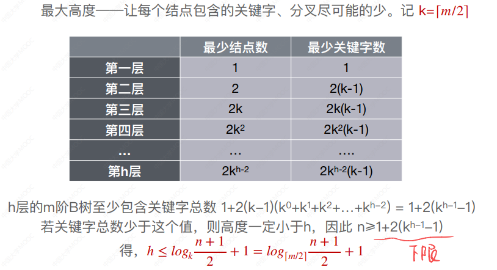 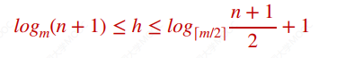
-
B树的插入和删除
- 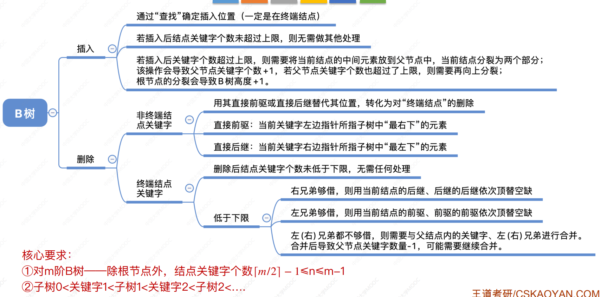
7.5 哈希表
-
散列表/哈希表：是一种数据结构，特点是数据元素的关键字与其存储地址直接相关
-
缺点
- hash冲突后，数据散列不均匀，产生大量线性查询，效率低
- 等值查询可以，但是遇到范围查询，得挨个遍历，hash就不合适了
-
优点
- 等值查询比较快
-
常见散列函数
-
除留余数法：
- 散列表表长为 ，取一个不大于 但最接近或等于 的质数
- 原因：用质数取模，分布更均匀，冲突更少
- 直观理解：合数会和其他数有公因子，即有相同特征，当关键字都有相同特征时，可能发生大量冲突
-
直接定址法： 或
- 计算简单，且不会产生冲突(?)，适合关键字的分布基本连续的情况
- 若关键字分布不连续，空位较多，则会造成存储空间的浪费
- 例：同一个班级的学生信息
-
数字分析法：选取数码分布较为均匀的若干位作为散列地址
- 数码在各位上出现的频率不一定相同，可能在某些位上分布均匀一些，某些位分布不均
- 可选数码分布较为均匀的若干位作为散列地址
- 适合于已知的关键字集合
- 例：手机号码后四位
-
平方取中法：取关键字的平方值的中间几位作为散列地址
- 这种方法得到的散列地址与关键字的每位都有关系，因此使得散列地址分布比较均匀
- 适用于关键字的每位取值都不够均匀，或均小于散列地址所需的位数
- 例：假设学生不超过十万人，可身份证号平方取中间5位
-
-
处理冲突的方法
-
拉链法：把所有散列值相同的存储在一个链表中
-
开放定址法：可存放新表项的空闲地址既向它的同义词表项开放，又向它的非同义词表项开放。， 是散列表表长， 是增量序列， 表示第 次发生冲突
-
线性探测法：
- 发生冲突时，每次往后探测相邻的下一个单元是否为空
- 缺点：容易造成同义词、非同义词的“聚集”现象
-
平方探测法：，
- 比线性探测法更不易产生“聚集”问题
- 散列表长度 必须是一个可以表示成 的素数，才能探测到所有位置
-
伪随机序列法： 是一个伪随机序列 https://zhuanlan.zhihu.com/p/33903430
-
-
再散列法：多准备几个散列函数，当散列函数冲突时，用下一个散列函数计算一个新地址，直到不冲突为止
-
-
散列查找成功的平均查找长度与装填因子有关，与表长无关
- 装填因子：表中记录数与表长之比
第八章 排序
8.1 排序的基本概念
- 稳定性：关键字相同的元素经过排序后相对顺序是否改变
8.2 插入排序
-
插入排序：每次将一个待排序的记录按其关键字大小插入到前面已排好序的子序列中，直到全部记录插入完成
-
直接插入排序（顺序表、链表）
- 最好情况：原本就有序，。共 趟处理，每一趟只需要对比关键字1次，不用移动元素。
- 最坏情况：原本为逆序，。
- 算法稳定性：稳定
-
折半插入排序（顺序表）
- 先用折半查找找到应该插入的位置，再移动元素
- 为了保证算法的“稳定性”，应继续在mid所指位置右边寻找插入位置
- 时间复杂度仍是 。比较关键字的次数减少了，但是移动元素的次数没变
- 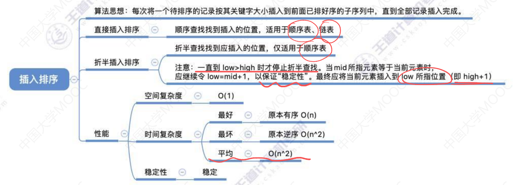
-
希尔排序（顺序表）
-
先将待排序表分割成若干形如 的“特殊”子表，对各个子表分别进行直接插入排序。缩小增量 ，重复上述过程，直到 为止
-
先追求表中元素部分有序，再逐渐逼近全局有序
-
时间复杂度
- 和增量序列 的选择有关，目前无法用数学手段证明确切的时间复杂度
- 最坏时间复杂度为 ，当 在某个范围内时，可达
-
稳定性：不稳定
- 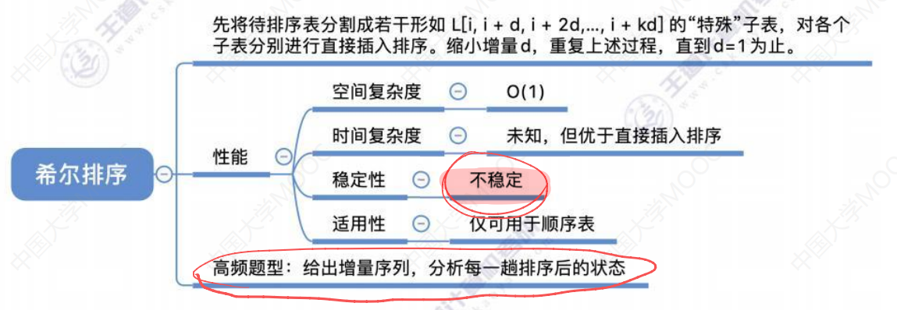
-
-
8.3 交换排序
-
冒泡排序（顺序表、链表）
-
从后往前（或从前往后）两两比较相邻元素的值，若为逆序，则交换它们，直到序列比较完。称这样过程为“一趟”冒泡排序，最多只需 趟排序
-
第一趟排序使关键字值最小的一个元素“冒”到最前面；第二趟排序结束后，最小的两个元素会冒到最前面；若某一趟排序没有发生“交换”，说明此时已经整体有序，可提前结束
-
最好情况：有序。比较次数 = n-1，交换次数 = 0；最好时间复杂度 =
- 移动元素次数 交换次数（每次交换都需要移动元素3次）
-
最坏情况：逆序。比较次数 = 交换次数 = ；最坏时间复杂度 =
-
稳定性：稳定
-
-
快速排序
-
在待排序表 中任取一个元素 pivot 作为枢轴（或基准，通常取首元素），通过一趟排序将待排序表划分为独立的两部分 和 ，使得 中的所有元素小于 pivot， 中所有元素大于等于 pivot，则 pivot 放在了其最终位置 上，这个过程称为一次“划分”。然后分别递归地对两个子表重复上述过程，直至每部分内只有一个元素或为空为止，即所有元素放在了其最终位置上
-
- 时间复杂度：$O(n×递归层数)$；空间复杂度：$O(递归层数)$
- 若每一次选中的“**枢轴**”将待排序序列划分为**很不均匀**的两个部分，则会导致递归深度增加，算法效率变低
- 假设每次选择的枢轴都是最靠边的元素，那么初始序列**有序或逆序**时，快速排序性能最差
-
若每一次选中的“枢轴”将待排序序列划分为均匀的两个部分，则递归深度最小，算法效率最高
- 优化思路：尽量选择可以把数据中分的枢轴元素（如选头、中、尾三个位置的元素，取中间值作为枢轴元素）
-
快速排序是所有内部排序算法中平均性能最优的排序算法
-
-
稳定性：不稳定
-
对所有尚未确定最终位置的所有元素进行一遍处理称为“一趟”排序，因此一次“划分” 一趟排序。一次划分可以确定一个元素的最终位置，而一趟排序也许可以确定多个元素的最终位置
-
8.4 选择排序
- 简单选择排序（顺序表、链表）
- 原理：每一趟在待排序元素中选取关键字最小的元素加入有序子序列。必须总共 趟处理
- 时间复杂度：；空间复杂度：
- 总共需要对比关键字 次，元素交换次数
- 稳定性：不稳定
- 堆排序
- 建堆过程，关键字对比次数不超过 ，建堆时间复杂度 =
- 堆排序的时间复杂度
- 堆排序的空间复杂度
- 稳定性：不稳定
8.5 二路归并排序
-
Merge 归并：把两个或多个有序的子序列合并为一个
-
路归并，每选出一个元素需要对比关键字 次
-
性能
- 空间复杂度：，来自于辅助数组
- 时间复杂度：
- 稳定性：稳定
8.6 基数排序
- 算法思想
- 将整个关键字拆分为 位/组，按照各个关键字位权重递增的次序（如个、十、百），做 趟**“分配”和“收集”**，若当前处理的关键字位可能取得 个值，则需要建立 个队列
- 分配：顺序扫描各个元素，根据当前处理的关键字位，将元素插入相应队列，一趟分配耗时
- 收集：把各个队列中的结点依次出队并链接。一趟收集耗时
- 性能
- 空间复杂度：
- 时间复杂度：
- 稳定性：稳定
- 擅长处理：
- 数据元素的关键字可以方便地拆分为 组，且 较小
- 每组关键字的取值范围不大，即 较小
- 数据元素个数 较大
为什么用快排
作者：qinzp
链接：https://www.zhihu.com/question/23873747/answer/327295185
来源：知乎
著作权归作者所有。商业转载请联系作者获得授权，非商业转载请注明出处。
一句话就是：因为堆排序下，数据读取的开销变大。在计算机进行运算的时候，数据不一定会从内存读取出来，而是从一种叫cache的存储单位读取。原因是cache相比内存，读取速度非常快，所以cache会把一部分我们经常读取的数据暂时储存起来，以便下一次读取的时候，可以不必跑到内存去读，而是直接在cache里面找。
一般认为读取数据遵从两个原则：temporal locality，也就是不久前读取过的一个数据，在之后很可能还会被读取一遍；另一个叫spatial locality，也就是说读取一个数据，在它周围内存地址存储的数据也很有可能被读取到。因此，在读取一个单位的数据(比如1个word)之后，不光单个word会被存入cache，与之内存地址相邻的几个word，都会以一个block为单位存入cache中。另外，cache相比内存小得多，当cache满了之后，会将旧的数据剔除，将新的数据覆盖上去。
在进行堆排序的过程中，由于我们要比较一个数组前一半和后一半的数字的大小，而当数组比较长的时候，这前一半和后一半的数据相隔比较远，这就导致了经常在cache里面找不到要读取的数据，需要从内存中读出来，而当cache满了之后，以前读取的数据又要被剔除。
简而言之快排和堆排读取arr[i]这个元素的平均时间是不一样的。
冒泡排序
- 从后往前（或从前往后）两两比较相邻元素的值，若为逆序，则交换它们，直到序列比较完。称这样过程为“一趟：冒泡排序
- 第一趟排序使关键字值最小的一个元素”冒“到最前面
- 每次前边已经确定最终位置的元素不用再比较
- 若某一趟排序没有发生”交换“，说明此时已经整体有序
- 冒泡排序用于链表，可以从前往后”冒泡“，每一趟将更大的元素”冒“到链尾
快速排序
- 时间复杂度：
- 空间复杂度：
哈夫曼编码
- 一种可变长度编码，对频率高的字符赋以短编码，对频率低的字符赋以长一些的编码，从而使字符的平均编码长度减短，起到压缩数据的效果
- 由哈夫曼树构造哈夫曼编码
- 哈夫曼树的带权路径长度WPL即最终得到的二进制编码长度，是最优的
图
-
若有满足 的子图 ，则称其为 的生成子图
-
无向图中的极大连通子图称为连通分量
-
有向图中的极大强连通子图称为有向图的强连通分量
-
连通图的生成树是包含图中全部顶点的一个极小连通子图
-
在非连通图中，连通分量的生成树构成了非连通图的生成森林
-
最小生成树：对于一个带权连通无向图 ，边权值之和最小的生成树，称 的最小生成树
-
AOV网（activity on vertex network）
- 用有向无环图表示一个工程，顶点表示活动，弧表示活动之间的优先关系（有向边 表示活动 必须在 之前），将这种有向图称为顶点表示活动的网络
-
AOE网（activity on edge）
- 带权有向图中，顶点表示事件，有向边表示活动，边上的权值表示完成该活动的开销（时间），称为用边表示活动的网络
- 从源点到汇点的所有路径中，具有最大路径长度的路径称为关键路径，把关键路径上的活动称为关键活动。完成整个工程的最短时间就是关键路径的长度
-
AVL树（平衡二叉树）
-
树上任一结点的左子树和右子树的高度之差不超过1
-
插入操作导致“最小不平衡子树”高度+1，经过调整后高度恢复，其他祖先节点都会恢复平衡
B树
-
从BST，AVL，红黑树到B树，是因为随着数据的插入，树的深度会变深，意味着I/O次数越多，影响读取的效率
-
B树是一个有序的多路平衡查询树
-
如何保证查找效率
-
叉查找树中，规定除了根节点外，任何结点至少有 个分叉，即至少含有 个关键字
-
叉查找树中，规定对于任何一个结点，其所有子树的高度都要相同
-
Union-Find 算法所有操作的复杂度都是 O(1)
排序
数据结构
- 数据结构由某一数据对象及该对象中所有数据成员之间的关系组成。Data_Structure = {D,R}
- 任何一个算法的设计取决于选定的逻辑结构；而算法的最终实现依赖于采用的存储结构
- 数据元素的映像
- 关系的映像：顺序映像、链式映像
树状数组、线段树